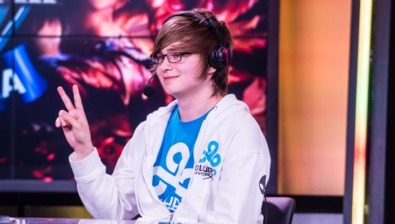

Born in Winter Springs, Florida, Zachary "Sneaky" Scuderi first joined the NA LCS (North American League of Legends Championship Series) with Team Quantic Gaming on April 6th, 2013. After qualifying, Cloud 9 quickly sponsored the team and Team Quantic Gaming became Cloud 9. Sneaky is currently the only remaining member of Cloud 9 that was on the original Cloud 9 team.